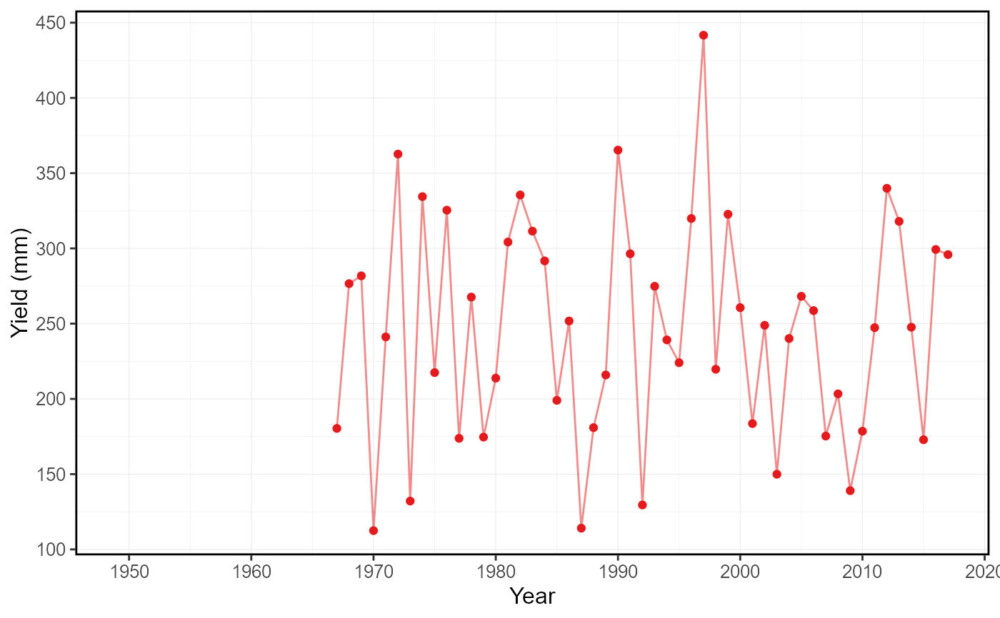

R/plot_annual_cumulative_stats.R
plot_annual_cumulative_stats.RdPlots annual and seasonal (if include_seaons = TRUE) total flows, volumetric discharge or water yields, from a
daily streamflow data set. Calculates statistics from all values, unless specified. Data calculated from
plot_annual_cumulative_stats() function. For water year and seasonal data, the designated year is the year in which the
year or season ends. Returns a list of plots.
plot_annual_cumulative_stats(
data,
dates = Date,
values = Value,
groups = STATION_NUMBER,
station_number,
use_yield = FALSE,
basin_area,
water_year_start = 1,
start_year,
end_year,
exclude_years,
months = 1:12,
include_seasons = FALSE,
include_title = FALSE,
complete_years = FALSE,
plot_type = "bar"
)Data frame of daily data that contains columns of dates, flow values, and (optional) groups (e.g. station numbers).
Leave blank or set to NULL if using station_number argument.
Name of column in data that contains dates formatted YYYY-MM-DD. Only required if dates column name is not
'Date' (default). Leave blank or set to NULL if using station_number argument.
Name of column in data that contains numeric flow values, in units of cubic metres per second.
Only required if values column name is not 'Value' (default). Leave blank if using station_number argument.
Name of column in data that contains unique identifiers for different data sets, if applicable. Only required
if groups column name is not 'STATION_NUMBER'. Function will automatically group by a column named 'STATION_NUMBER' if
present. Remove the 'STATION_NUMBER' column beforehand to remove this grouping. Leave blank if using station_number
argument.
Character string vector of seven digit Water Survey of Canada station numbers (e.g. "08NM116") of
which to extract daily streamflow data from a HYDAT database. Requires tidyhydat package and a HYDAT database.
Leave blank if using data argument.
Logical value indicating whether to calculate area-based water yield, in mm, instead of volumetric discharge.
Default FALSE.
Upstream drainage basin area, in square kilometres, to apply to observations. Three options:
(1) Leave blank if groups is STATION_NUMBER with HYDAT station numbers to extract basin areas from HYDAT.
(2) A single numeric value to apply to all observations.
(3) List each basin area for each group/station in groups (can override HYDAT value if listed) as such c("08NM116" = 795,
"08NM242" = 10). If group is not listed the HYDAT area will be applied if it exists, otherwise it will be NA.
Numeric value indicating the month (1 through 12) of the start of water year for
analysis. Default 1.
Numeric value of the first year to consider for analysis. Leave blank or set well before start date (i.e.
1800) to use from the first year of the source data.
Numeric value of the last year to consider for analysis. Leave blank or set well after end date (i.e.
2100) to use up to the last year of the source data.
Numeric vector of years to exclude from analysis. Leave blank or set to NULL to include all years.
Numeric vector of months to include in analysis. For example, 3 for March, 6:8 for Jun-Aug or
c(10:12,1) for first four months (Oct-Jan) when water_year_start = 10 (Oct). Default summarizes all
months (1:12). If not all months, seasonal total yield and volumetric flows will not be included.
Logical value indication whether to include seasonal yields or volumetric discharges. Default TRUE.
Logical value to indicate adding the group/station number to the plot, if provided. Default FALSE.
Logical values indicating whether to include only years with complete data in analysis. Default FALSE.
Type of plot, either "bar" or "line" styles. Default "bar".
Use "line" for previous version of plot.
A list of ggplot2 objects with the following for each station provided:
annual total volumetric discharge, in cubic metres
if include_seasons = TRUE, two seasons total volumetric discharges, in cubic metres
if include_seasons = TRUE, four seasons total volumetric discharges, in cubic metres
If use_yield argument is used the list will contain the following objects:
annual water yield, in millimetres
if include_seasons = TRUE, two seasons water yield, in millimetres
if include_seasons = TRUE, four seasons water yield, in millimetres
# Run if HYDAT database has been downloaded (using tidyhydat::download_hydat())
if (file.exists(tidyhydat::hy_downloaded_db())) {
# Plot annual cumulative yield statistics with default HYDAT basin area
plot_annual_cumulative_stats(station_number = "08NM116",
use_yield = TRUE)
# Plot annual cumulative yield statistics with custom basin area
plot_annual_cumulative_stats(station_number = "08NM116",
use_yield = TRUE,
basin_area = 800)
}
#> Warning: One or more calculations included missing values and NA's were produced. If desired, filter data for complete years or months, or use the 'ignore_missing' or 'allowed_missing' arguments (if applicable) to ignore or allow some missing values.
#> Warning: One or more calculations included missing values and NA's were produced. If desired, filter data for complete years or months, or use the 'ignore_missing' or 'allowed_missing' arguments (if applicable) to ignore or allow some missing values.
#> $Total_Yield

#>